Como se os Looney Tunes já não tivessem problemas suficientes, a Warner Bros. Feature Animation criou um time novinho de vilões para infernizar a vida deles. Veja como eles ganharam vida. Clique em um esboço para ampliar.


Bolas de golfe rodopiam em volta da cabeça de Michael Jordan quando ele acorda na Terra dos Looney Tunes. Táxis de jornal e flores de celofane por todo lado. Escolha uma das sequências abaixo.
Michael se recupera de uma queda feia. Veja, passo a passo, como foi feita a cena das bolas de golfe girando em volta da cabeça dele. Clique para ampliar.
-
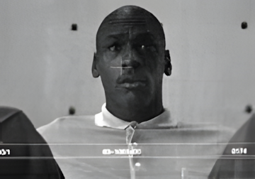
Michael é filmado diante de uma tela verde, que depois é trocada por um cenário. Os pontos atrás da cabeça servem de referência para os artistas de computação.
-
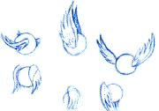
Os animadores desenham um rascunho das bolas de golfe voando.
-
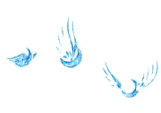
Também são feitos rascunhos das sombras das bolas, para dar volume a elas.
-
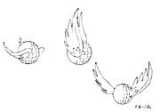
As bolas ganham o traço final ("clean-up")...
-
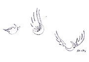
...e as sombras também.
-
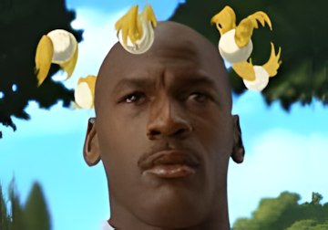
Os desenhos são pintados no computador e combinados com o cenário e a filmagem de Michael.


Hortelino e Eufrazino, ou seriam Jules e Vincent? Durante o grande jogo, os dois fazem uma rápida homenagem a Quentin Tarantino (Pulp Fiction). Clique para ampliar.
-
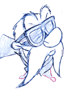
Eufrazino olha para Hortelino...
-
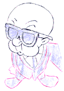
...Hortelino olha de volta para Eufrazino.
-
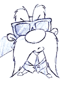
Eufrazino mira o alvo...
-
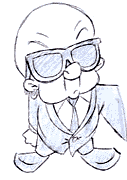
...e Hortelino faz o mesmo.
-
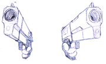
A visão em grande angular dos canos das armas é desenhada separadamente.
-
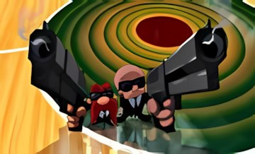
Os desenhos são combinados com a quadra de basquete feita no computador.


Cenários pintados e feitos no computador. Com toda a atenção nos personagens, é fácil esquecer os belos cenários das sequências animadas. Clique para ampliar.


O visual da Lola Bunny. Alguns dos muitos esboços e desenhos que deram forma à Lola. Clique para ampliar.


As câmeras extras registraram Michael Jordan jogando com atores vestidos de verde. Na pós-produção, eles foram removidos e substituídos pelos personagens animados. Os arquivos QuickTime originais de 1996 não estão mais disponíveis; escolha uma imagem para buscar vídeos relacionados no YouTube.
Centenas de pessoas ao redor do mundo trabalharam juntas para colocar Michael Jordan na Terra dos Looney Tunes. Este é um resumo do texto original de Bill Warren.
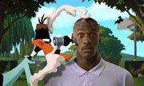
Space Jam foi o primeiro longa da história a combinar tanta animação tradicional, live-action e computação gráfica 3D. Muita gente imagina que "animação por computador" é um técnico digitando "Pernalonga" e "Patolino", escolhendo o cenário "Marte" e voltando uma hora depois para buscar o desenho pronto.
Nada disso! O artista nunca sai de cena. Por mais que o computador trabalhe, Space Jam começou com animadores desenhando alguns dos personagens mais famosos do mundo do jeito de sempre: com lápis e papel.
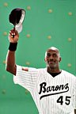
Vida real no mundo dos desenhos
Misturar gente de verdade e desenhos é quase tão antigo quanto a animação: passou por Gertie, o Dinossauro, pelas comédias da Alice de Walt Disney e por Mary Poppins (1964). Mas só Uma Cilada para Roger Rabbit (1988) fez isso do começo ao fim de um longa. Space Jam quis ir além.
A tecnologia molda a arte
Logo no começo do filme, a câmera sobe de um telhado em miniatura para um céu feito no computador, entra no planeta dos Nerdlucks e termina numa cena de animação clássica, em 2D. Tudo no que parece um único movimento de câmera.
Ser verde
É quase impossível um ator olhar para um espaço vazio onde depois vai aparecer um pato falante. A solução: paredes verdes, chão verde e atores do grupo de improviso Groundlings vestidos de verde dos pés à cabeça, fazendo o papel dos personagens.
Para Sherman Oaks e além
Além das equipes da Warner em Sherman Oaks (Califórnia) e em Londres, estúdios de animação do mundo todo participaram. Os desenhos eram escaneados, pintados no programa Animo e enviados por fibra ótica para a Cinesite.
Na Cinesite
Com o sistema Cineon, da Kodak, os artistas da Cinesite juntavam desenhos e filmagens. Em cada cena, uma "hero shot" definia o visual. Ela era aprovada por Ivan Reitman antes de ser aplicada às outras tomadas.
Na quadra de basquete
Nos desenhos clássicos, a perspectiva de um movimento de câmera tinha que ser desenhada à mão, trabalho de artista e de matemático. Em Space Jam, as paredes e o piso do ginásio foram criados inteiramente no computador, o que permitiu os movimentos de câmera de Joe Pytka.
Enchendo a arquibancada
A torcida do jogo tinha que ser toda de desenhos: 25 mil personagens! Como animar todos era impossível, a Cinesite duplicou personagens no computador e filmou pessoas reais fantasiadas, tratadas para parecerem "meio desenhadas".
Distorcendo Michael Jordan
Jordan foi escaneado em 3D. Assim, ele podia ser esticado, espremido e até amassado em forma de bola de basquete. E, quando o Pernalonga dá um beijo nele, os lábios de Jordan foram levemente alterados no computador.
O artista está no sistema
No fim, o filme inteiro existia dentro dos computadores da Cinesite e voltou para a película por meio de lasers. Mas o computador não substituiu ninguém: "ele sempre foi uma ajuda para o artista", diz o codiretor de animação Bruce Smith.